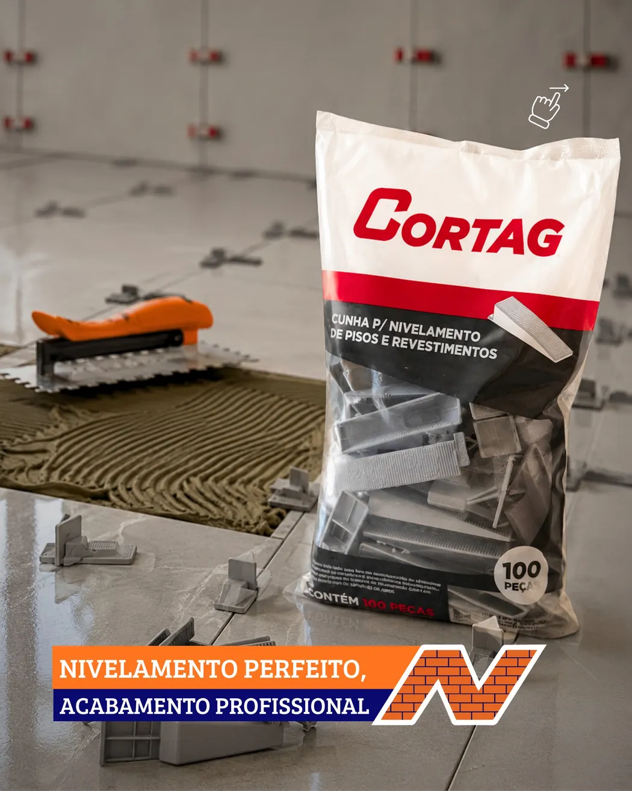
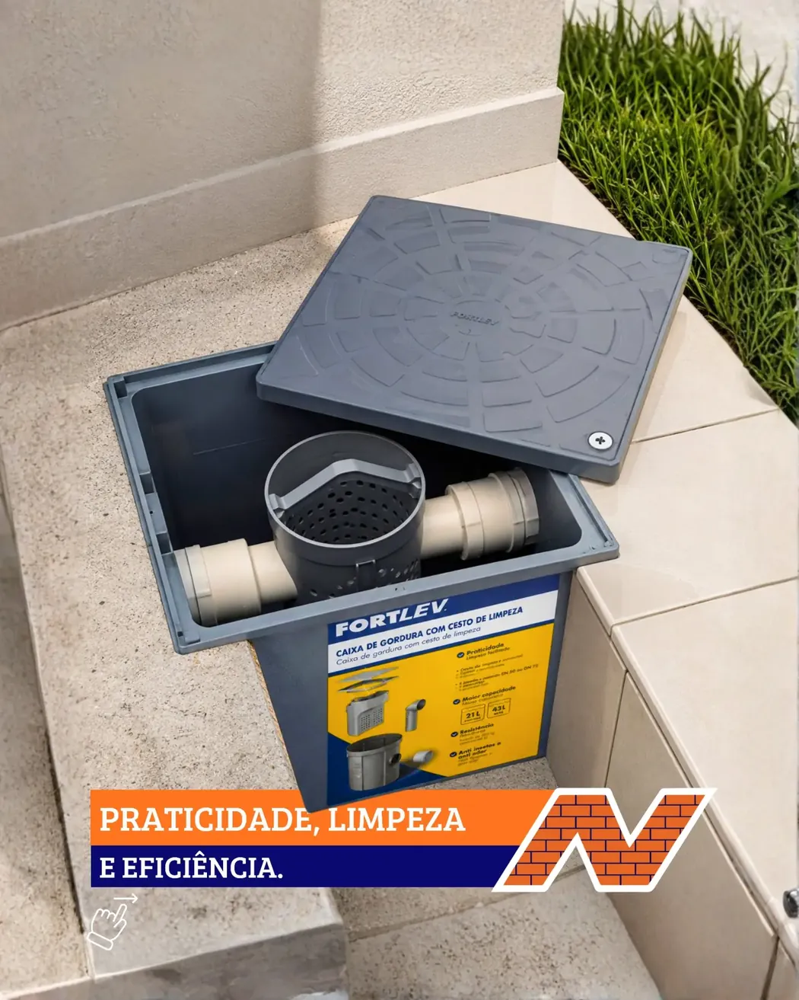
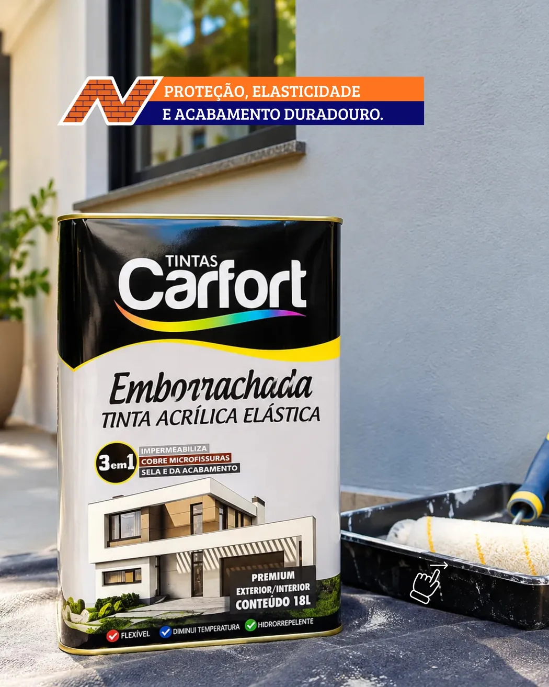

Sua obra
tem onde começar.
Da ferramenta ao acabamento, encontre opções para construir e reformar. Mande sua lista e consulte a disponibilidade diretamente com a Narciso.
O material certo para cada etapa.
Ferramentas, soluções para revestimento, hidráulica, pintura e elétrica. Veja produtos que já apareceram na vitrine da Narciso e consulte as opções disponíveis.




Fotos reais do conteúdo da Narciso. Marcas, preços e estoque devem ser confirmados no atendimento.
Não encontrou o que precisa? Peça uma cotaçãoSua loja de materiais em Vila Velha.
Quem está construindo ou reformando sabe: escolher o material faz parte de cada etapa da obra. Na Narciso, você encontra uma loja física e um canal direto de contato para consultar produtos, marcas e orçamentos.
Materiais para sua obra no Vale Encantado.
Se você procura uma loja de material de construção em Vila Velha, a Narciso está na Rua Barra Nova, 195, no bairro Vale Encantado. Você pode consultar ferramentas, tintas, itens de hidráulica, materiais elétricos e acessórios de acabamento por WhatsApp antes de visitar a loja.
Para agilizar o orçamento, envie o nome do produto, a quantidade, a medida ou bitola, e a marca desejada, quando houver. A equipe confirma opções e disponibilidade.
Vai reformar em Cobilândia? Leia nosso guia para organizar materiais de construção e evitar compras erradas →.
Ver localização e formas de contato →O que informar no orçamento
- Ferramentas: aplicação, modelo e voltagem.
- Pintura: área, ambiente e tipo de superfície.
- Hidráulica: diâmetro, peça e quantidade.
- Elétrica: bitola, cor e metragem do cabo.
- Pisos: metragem, formato da peça e acessórios.
Não encontrou sua categoria? Envie uma lista completa de materiais.
Pediu.
Cotou.
Resolveu.
Não precisa procurar item por item no site. Conte à Narciso o que você precisa: montamos a mensagem e abrimos seu WhatsApp para enviar.
O que você está procurando?
Preencha o que souber. Os campos são opcionais.
Ficou alguma dúvida?
Se não encontrou a informação que procura, mande uma mensagem para a loja.
Perguntar pelo WhatsAppPosso enviar minha lista de materiais pelo WhatsApp?
Os produtos exibidos estão disponíveis na loja?
A loja faz entregas?
Quais formas de pagamento vocês aceitam?
Onde fica a Narciso Material de Construção?
Venha visitar a loja.
Estamos no Vale Encantado, em Vila Velha. Quer perguntar sobre um produto antes de sair de casa? Fale com a equipe pelo WhatsApp.
Vila Velha – ES · CEP 29113-040
É aqui que a obra começa.
Rua Barra Nova, 195, Vale Encantado. Abra a rota no mapa e venha até a Narciso. Saiba mais sobre a loja no Vale Encantado → Leia sobre o crescimento imobiliário e as obras no Vale Encantado →
Abrir rota no Maps